TI Capture the Flag (TI_ctf)
Das TI Capture the Flag (TI_ctf) ist der jährliche Cybersecurity‑Wettbewerb der gematik rund um die Telematikinfrastruktur (TI). In einer virtuellen Welt lösen Teams kreative Challenges zu Kernbausteinen wie e‑Rezept, ePA, KIM, TI‑Messenger und TI‑Gateway, sammeln Flags und messen sich im Team – vom Einsteiger bis zum Profi.
Seit 2021 bringt das TI_ctf die Community zusammen: ein offener, spielerischer Cybersecurity‑Wettbewerb rund um die Telematikinfrastruktur (TI) – von Einsteiger bis Profi.
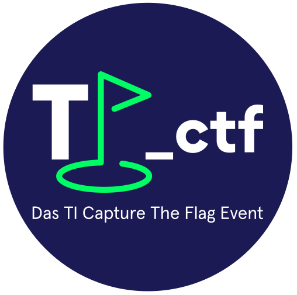
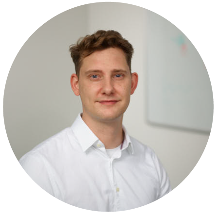
Projektleitung TI_ctf
Die Idee zu einem eigenen CTF bei der gematik hat uns früh begleitet. Unser CISO, Holm Diening, hat den Gedanken 2001 in unser Team getragen – und der Wunsch, ein offenes, wiederkehrendes Event aufzubauen, ist seitdem stetig gewachsen. Für mich war es die passende Verbindung aus Kreativität und Cyber Security.
Seit dem Anfang entwerfe ich die Logos, Storylines und Maps – immer gemeinsam mit einem engagierten Team und mit Liebe zum Detail. Was mich antreibt, ist der Moment, in dem Idee, Technik und Spielspaß zusammenfinden und für die Community ein stimmiges Erlebnis entsteht.
Unser Ziel bleibt unverändert: ein öffentliches, jährliches CTF für den deutschsprachigen Raum, welches wir gemeinsam mit unseren Partnern in einer simulierten Umgebung ausrichten. Wir präsentieren unsere Produkte dabei als wechselnde Themenwelt – nicht, um Schwachstellen zu suchen, sondern um Lernen, Austausch und Teamgeist spielerisch zu fördern.
Neben unseren Aufgaben im Cyber Defense Center zur 360‑Grad‑Sicherheit in der TI entwickeln wir TI_ctf komplett in Eigenregie: vom Event‑Branding und den Logos über die virtuellen Maps und das Design unserer CTFd‑Plattform bis hin zu allen Challenges und Aufgaben. Alles stammt aus unserem Team – mit viel Liebe zum Detail und Fokus auf einen sicheren, lehrreichen und spielerischen Wettbewerb.
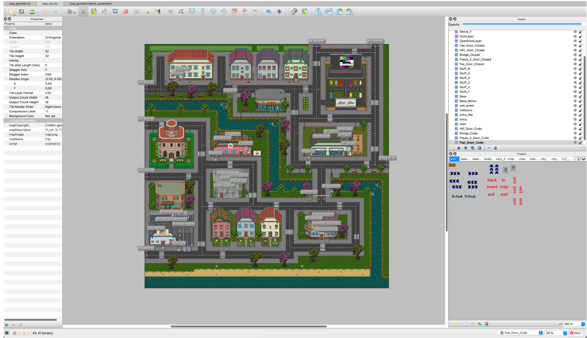
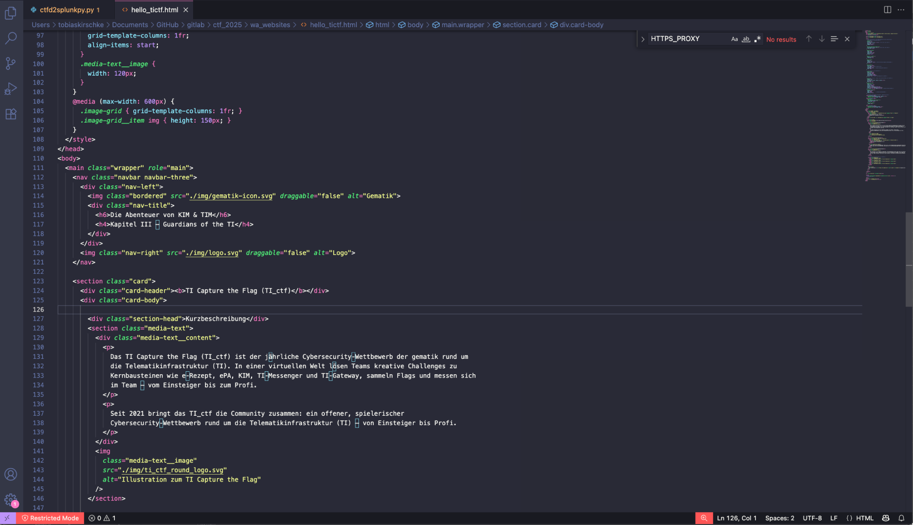
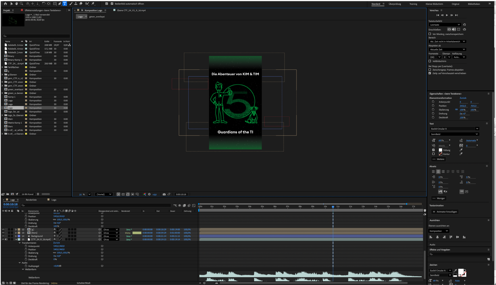
Nach dem Event ist vor dem Event: Im Januar starten wir mit frischem Kopf und großer Lust in die neue Runde. Den Auftakt macht die Suche nach einer starken Storyline zum jeweiligen TI‑Produkt – ein roter Faden, der Technik und Spielspaß verbindet. Und doch beginnt es fast immer mit dem Gefühl: Ein Logo und ein Slogan müssen her. Wir lassen uns von Klassikern aus Film und Spiel inspirieren, von dem, womit wir aufgewachsen sind und was uns bis heute begeistert. So entstehen Wortspiele und Anlehnungen, die neugierig machen: Von „Capture the TI‑eRx" bis zur „KIM & TIM"-Reihe – jedes Jahr fordernd, jedes Jahr fesselnd. Der Moment, in dem Name und Bild zusammenpassen, ist der Startschuss: Jetzt nimmt das Event Form an.
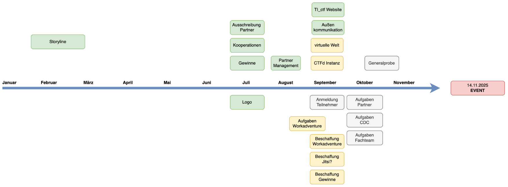
Die ersten Entwürfe sind die schwierigsten – so ist das mit guten Ideen. Wir setzen uns zusammen, skizzieren, verwerfen, verbessern. Wir nehmen den Pinsel sprichwörtlich selbst in die Hand und feilen an jeder Linie, bis Form, Farbe und Aussage stimmen. Dieses handgemachte Branding ist unser Versprechen: Wir gehen den extra Schritt. Und wenn das Logo schließlich sitzt, spüren wir dieses Kribbeln: „Dieses Jahr wird wieder großartig." Es ist mehr als ein Bild – es ist der Puls des Events, der uns den Ton für alles Weitere vorgibt.
Und dann ist er plötzlich da: der passende Slogan. Nach wochenlanger, manchmal frustrierter Suche fällt er einem beim Teekochen ein – klar, stimmig, genau richtig. Solche goldenen Momente tragen uns durch die langen Phasen des Tüftelns und erinnern daran, warum wir drangeblieben sind: weil aus Beharrlichkeit und Freude am Detail etwas entsteht, das begeistert.
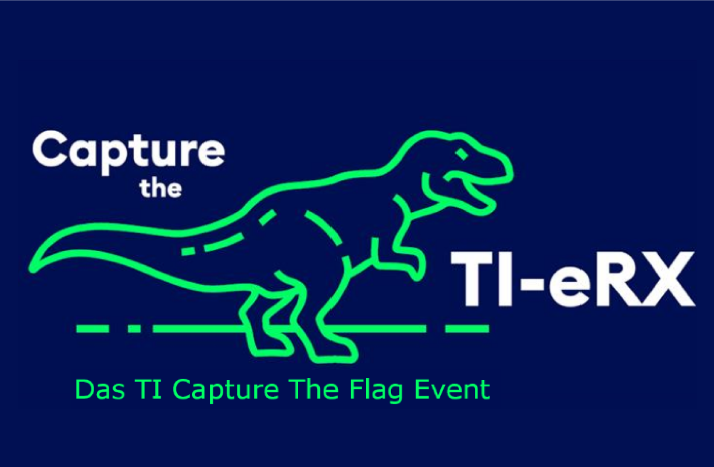
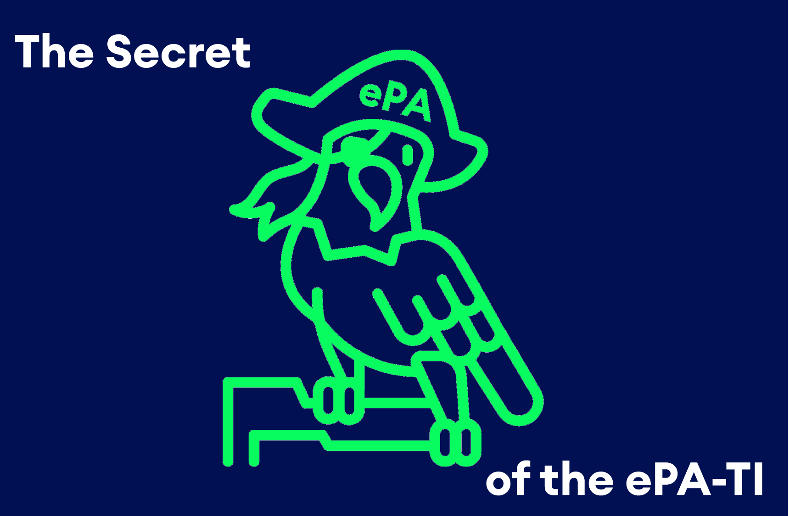
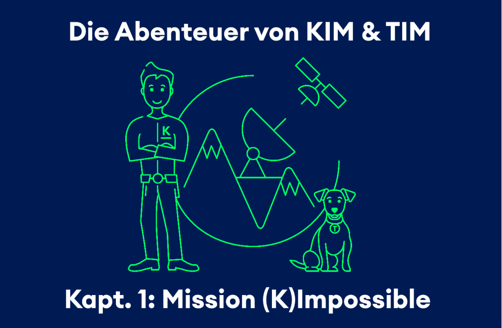
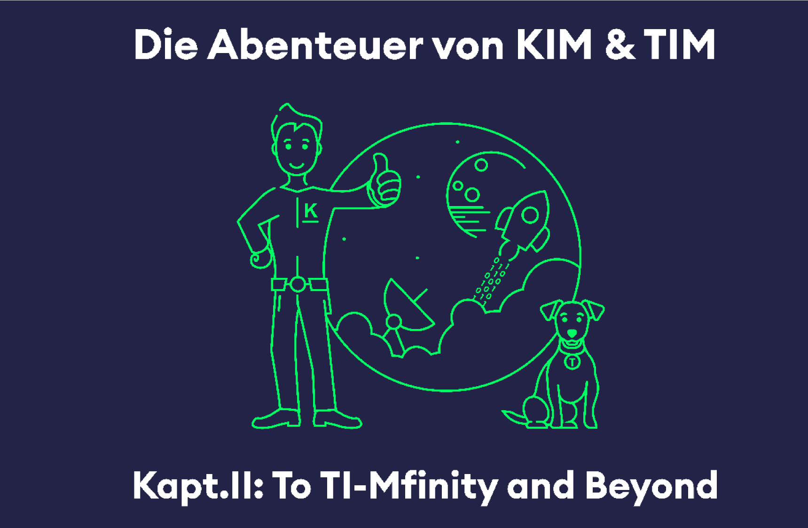
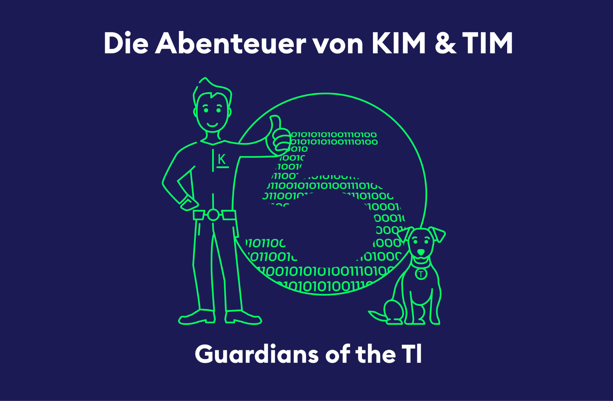
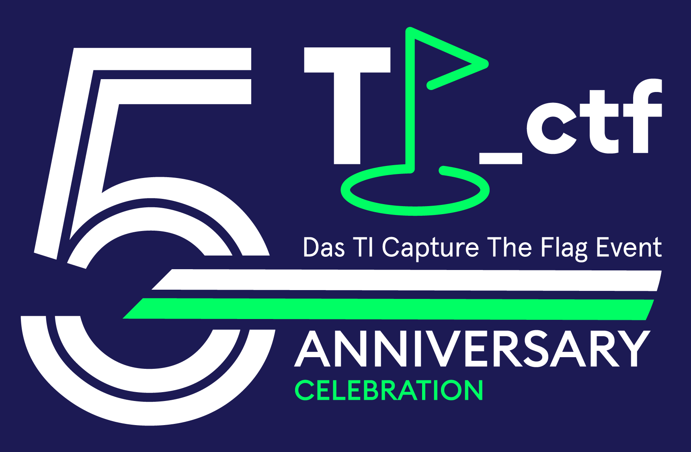
Maps zu gestalten ist, als würde man ein Buch schreiben: Die erste Seite kostet am meisten Mut. Wir investieren Zeit und Energie in Storylines, Aufgaben und einen runden Schliff, damit der Rundgang durch die Welt sich stimmig und spannend anfühlt. Jede Station soll Sinn machen, fair sein, überraschen – für Einsteiger wie für Profis. Wir arbeiten an Räumen, die leiten statt verwirren, und an Aufgaben, die herausfordern statt frustrieren. Unser Ziel ist klar: Ein Erlebnis, das trägt. Wer die Map betritt, soll neugierig werden und am Ende zufrieden sagen: „Das hat sich gelohnt."
Sechs Maps für jedes Team? Per Hand wäre das ein Kraftakt – also automatisieren wir. Mit API‑Calls an WorkAdventure provisionieren wir die Welten reproduzierbar, effizient und sauber. Neben dem Design zeigen wir hier unsere Skript‑ und Integrationsfähigkeiten: Templates, Konfigurationen und QA greifen ineinander, sodass aus einer Idee eine skalierbare Infrastruktur wird. So bleibt die kreative Energie da, wo sie hingehört: in die Inhalte. Den Rest erledigt unsere Automatisierung verlässlich im Hintergrund.
Von der Registrierung bis zur Bestätigung begleiten wir unsere Community mit klaren Prozessen und freundlicher Kommunikation. Wir haben den Weg durchgespielt – von handgeschriebenen E‑Mails bis zur vollautomatischen Einladung. Ab rund 180 Teilnehmern ist Automatisierung nicht mehr Kür, sondern Pflicht: saubere Datenflüsse, belastbare Zustellung, transparente Schritte. Dabei bleibt eines unverändert: Wir kümmern uns. Die Technik skaliert, die Haltung bleibt persönlich.
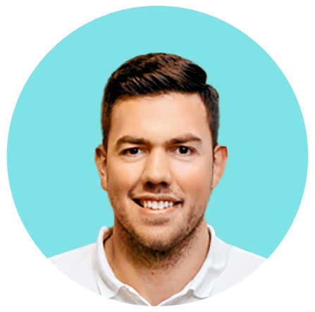
Teilnehmermanagement
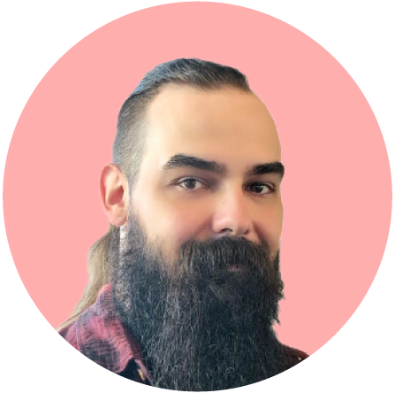
Partnermanagement
Frühzeitig gehen wir in den Schulterschluss mit unseren Partnern. In regelmäßigen Abstimmungen teilen wir Ideen, priorisieren gemeinsam und erleben im Wochenrhythmus, wie das Projekt wächst. Anforderungen werden synchronisiert, Inhalte abgestimmt, Tests geplant und Ergebnisse freigegeben. Diese Transparenz schafft Vertrauen – und sorgt dafür, dass das, was wir bauen, wirklich trägt. Am Ende sind es die gemeinsamen Meilensteine, die das Event stark machen.
Frühzeitig verzahnen wir unsere Kampagne mit den Kanälen – von Social Media bis zur Website. Täglich beobachten wir die Anmeldezahlen, erkennen Muster und schärfen die Botschaften nach. Wir testen Hooks, variieren Visuals und justieren die Posting-Zeiten, damit jede Nachricht dort landet, wo sie Wirkung entfaltet.
In kurzen Feedback-Schleifen werden Texte, Bilder und Videos abgestimmt, freigegeben und publiziert. Transparenz ist dabei unser Taktgeber: Was performt, wird skaliert. Was nicht zieht, wird verbessert – sofort und nachvollziehbar. So entsteht ein klarer Rhythmus aus Planen, Messen, Optimieren.
Gemeinsam mit dem Team und unseren Partnern erhöhen wir die Sichtbarkeit – iterativ und zielgerichtet. Jeder Post hat einen Zweck, jeder CTA eine Richtung: Aufmerksamkeit in Anmeldungen verwandeln. Am Ende zählt der Effekt: Mehr Reichweite, mehr Engagement, mehr Momentum für ein starkes Event.
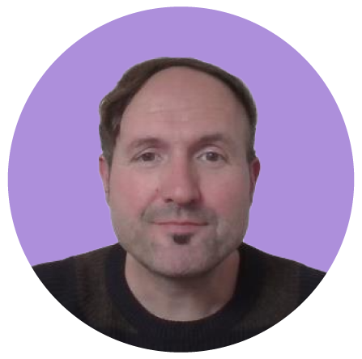
Kommunikation
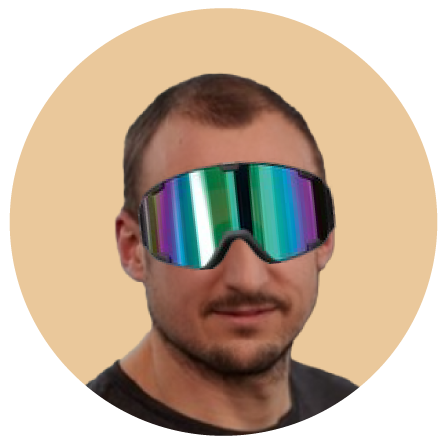
Aufgabenmanagement
Bei unserem CTF möchten wir Aufgaben entwickeln, die euch zeigen, wie die Produkte der Telematikinfrastruktur wirklich funktionieren. Dafür sprechen wir intensiv mit den Fachteams und tauchen in die Spezifikationen ein – so stellen wir sicher, dass die Aufgaben nicht nur spannend, sondern auch fachlich korrekt sind.
Das Ganze teilen wir auf: Im Workadventure lernt ihr die Grundlagen spielerisch kennen. Im eigentlichen CTF könnt ihr dann mit kniffligeren Aufgaben zeigen, was ihr draufhabt – immer basierend auf dem, was ihr vorher gelernt habt. Außerdem holen wir uns Unterstützung von gematiker:innen und externen Partner:innen, die eigene Aufgaben beisteuern.
Alle Aufgaben prüfen wir sorgfältig und entwickeln passende Lösungswege. So können wir euch während des Events gezielt Hinweise geben, falls ihr mal nicht weiterkommt. Unser Ziel: Ihr sollt Spaß haben, gemeinsam lernen und am Ende ein gutes Gefühl für die TI bekommen.
Unsere Challenges für dieses Jahr entstehen direkt aus der TI‑Praxis: passend zu Produkt und Spezifikation, kuratiert von Spezialistinnen und Spezialisten mit jahrelanger CTF‑Erfahrung.
2025 sind wir stark aufgestellt: Mit echter Begeisterung für Cybersecurity und tiefem Know‑how in e‑Rezept, ePA, KIM, TI‑Messenger und TI‑Gateway. Wir entwickeln die Umgebungen stetig weiter und liefern realistische, lustige und anspruchsvolle Aufgaben nah am Wesen der Telematikinfrastruktur.
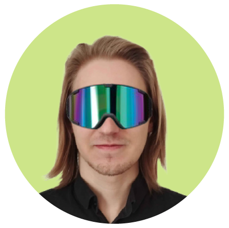
Aufgabenmanagement
Fünf Jahre TI_ctf bedeuten: viel Erfahrung, viele Geschichten und eine wachsende Beliebtheit, über die wir uns ehrlich freuen. Wir machen das für euch – für die Community, die Lernfreude, den Teamgeist. Wir lieben die Idee eines eigenen CTF‑Events und leben sie jedes Jahr aufs Neue. Unser Dank gilt allen Teilnehmerinnen und Teilnehmern, die diesen Traum möglich machen. Und unser Antrieb bleibt: besser werden, neugierig bleiben, mit Leidenschaft gestalten. Das nächste Jahr beginnt im Januar – und wir können es kaum erwarten.
Mehr Informationen: ctf.gematik.de